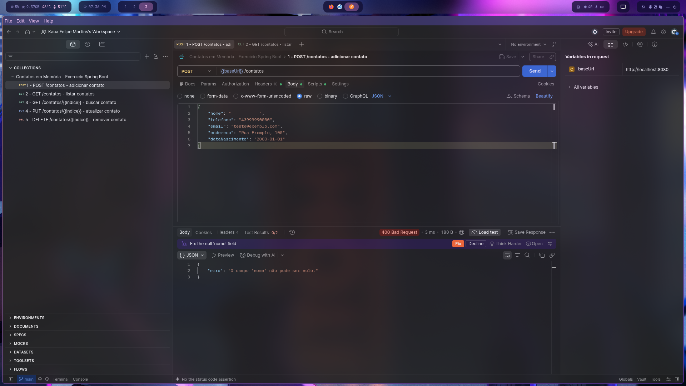

Relatório de Testes - Tratamento de Erros
API de contatos em memória com ResponseEntity (Spring Boot)
POST
1. Validação: nome nulo (post-1)
400 Bad RequestA tentativa de criação com nome: null é rejeitada. O contato não é adicionado e a API retorna a mensagem de validação.

POST
2. Validação: telefone nulo (post-2)
400 Bad RequestA tentativa de criação com telefone: null é rejeitada com "O campo 'telefone' não pode ser nulo ou vazio.".